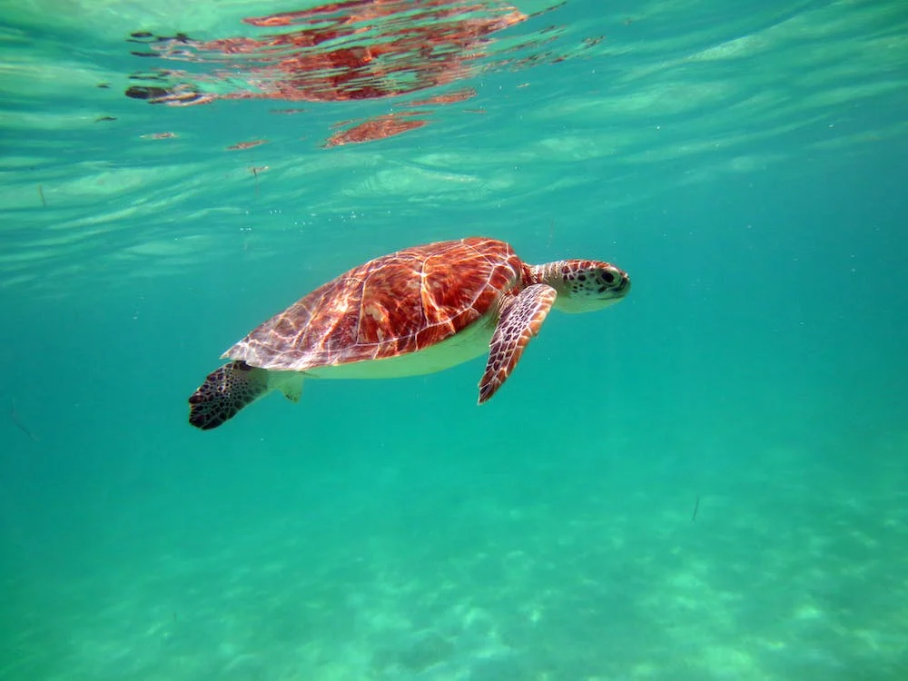

INTRODUCTION
The Sri Lankan turtle population is renowned for its diversity and significance in global conservation efforts.
The island nation's coastal areas provide vital nesting grounds for several species of sea turtles, including the Olive Ridley, Green, Hawksbill, and Leatherback turtles.
These turtles play a crucial role in maintaining the balance of marine ecosystems by controlling jellyfish populations and contributing to nutrient cycling.
Sri Lanka's commitment to turtle conservation is evident through the establishment of numerous turtle conservation projects and sanctuaries along its coastline.
The conservation efforts aim to protect nesting sites, educate local communities, and raise awareness about the importance of preserving these majestic creatures for future generations.
TURTLE CONSERVATION EFFORTS IN SRI LANKA

Turtle conservation efforts in Sri Lanka are robust and comprehensive.
The country has established numerous turtle conservation projects and sanctuaries along its coastline, focusing on protecting nesting sites and ensuring the safety of turtle eggs.
Conservationists and volunteers work closely with local communities to raise awareness, promote sustainable fishing practices, and combat threats such as poaching and habitat destruction.
These concerted efforts have contributed to the preservation and recovery of turtle populations in Sri Lanka, making it a global leader in turtle conservation.
TURTLE SPECIES DIVERSITY

Sri Lanka boasts a remarkable diversity of turtle species, making it a significant hotspot for turtle conservation.
The island's coastal waters serve as vital nesting grounds for endangered and critically endangered turtles, including the Olive Ridley, Green, Hawksbill, and Leatherback turtles.
Each species has its own unique characteristics and ecological importance, highlighting the importance of protecting and preserving their habitats for the overall health of marine ecosystems.
ECOTOURISM AND TURTLE WATCHING

Sri Lanka offers exceptional opportunities for ecotourism, particularly when it comes to turtle watching.
The country's pristine beaches attract visitors from all over the world who are eager to witness the captivating nesting and hatching rituals of turtles.
Popular destinations such as Kosgoda, Rekawa, and Pigeon Island provide guided tours and educational experiences, allowing tourists to observe these magnificent creatures while ensuring minimal disturbance to their natural behavior.
Ecotourism not only contributes to the local economy but also raises awareness about the importance of turtle conservation and fosters a sense of environmental stewardship among visitors, promoting sustainable practices and supporting ongoing conservation efforts.
OUR MISSION
- Preserving turtle populations for a thriving ocean.
- Nurturing hatchlings, safeguarding the future of turtles.
- Dedicated to conservation, protecting precious turtle species.
HOW YOU CAN CONTRIBUTE TO SAVE TURTLES
- Reduce plastic waste: Use reusable alternatives, recycle.
- Support local hatcheries: Volunteer, donate, or adopt nests.
- Spread awareness: Educate others about turtle conservation.
- Protect nesting sites: Avoid disturbing turtle habitats.
- Practice responsible fishing: Use turtle-friendly gear and techniques.